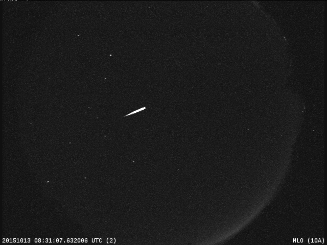

October 09, 2026
The Orionids Are Already Falling — Here's How to Catch Halley's Comet's Leftovers

NASA All Sky Fireball Network (public domain)
The Orionids Are Already Falling — Here's How to Catch Halley's Comet's Leftovers
The most famous comet in history is throwing crumbs at Earth right now, and you can watch them burn up.
The Orionids are active from October 2 through November 7, 2026, with the peak falling on the night of October 21–22, according to NASA. Every meteor you see is a grain of debris shed by 1P/Halley — Halley's Comet itself. The comet won't return until 2061, but its trail arrives on schedule every October.
What to expect
- Rate: About 10 to 20 meteors per hour under dark skies.
- Speed: These are fast — about 41 miles (66 kilometers) per second into the atmosphere, some of the swiftest meteors of the year.
- Signature moves: Orionids are known for brightness, and the fast ones often leave glowing "trains" of debris that linger for seconds to minutes. Some become full fireballs.
- Where to look: The radiant point sits just north of Betelgeuse, the bright reddish star in Orion's raised club. But meteors can streak across the whole sky — so look broadly, not at the radiant.
The Moon problem (and the honest workaround)
2026 is a rough Moon year for this shower. A waxing gibbous Moon — around 74–80% illuminated — will be up for most of the peak night, washing out all but the brightest meteors. Don't skip it, though. The strategy that actually works:
1. Go after the Moon sets. In 2026 the best window is the pre-dawn hours — roughly 3 a.m. through dawn twilight on the peak mornings — when the radiant is climbing high and the Moon has dropped below the horizon.
2. Block the Moon if it's up. A tree, a hill, or a building between you and the Moon restores real darkness.
3. Stay out anyway. The Orionids have a broad, plateau-like maximum, so several mornings around the peak — October 21 through 23 — are worth an alarm clock. If clouds kill the peak night, try the next morning.
NASA's own advice: find dark sky away from city lights, lie flat on your back with feet facing southeast (Northern Hemisphere), and give your eyes 20–30 minutes to adapt. The show runs until dawn.
The one gear upgrade that's actually worth it
Meteors need no equipment — that's the whole point. But there's one classic beginner upgrade that genuinely changes a meteor shower: a pair of 15x70 astronomy binoculars. Between meteors, you can sweep star clusters, the Moon's craters, and Jupiter's moons, then drop the binoculars the moment a streak fires overhead.
The pick that nearly every beginner stargazing guide lands on is the Celestron SkyMaster 15x70 — wide field of view, no tripod assembly or setup learning curve, and usually around a hundred dollars. We haven't run lab tests on optics (that's a different department), but it's the consensus recommendation for one reason: it's the simplest way to make a night sky bigger.
As an Amazon Associate, The Discovery Wire earns from qualifying purchases.
Sources: NASA's Orionids page and the American Meteor Society; Moon-timing analysis via EarthSky. Image: an Orionid fireball captured by NASA's All Sky Fireball Network at Mount Lemmon, Arizona, October 13, 2015 (public domain).
Source: NASA — read the original report
← Back to latest stories